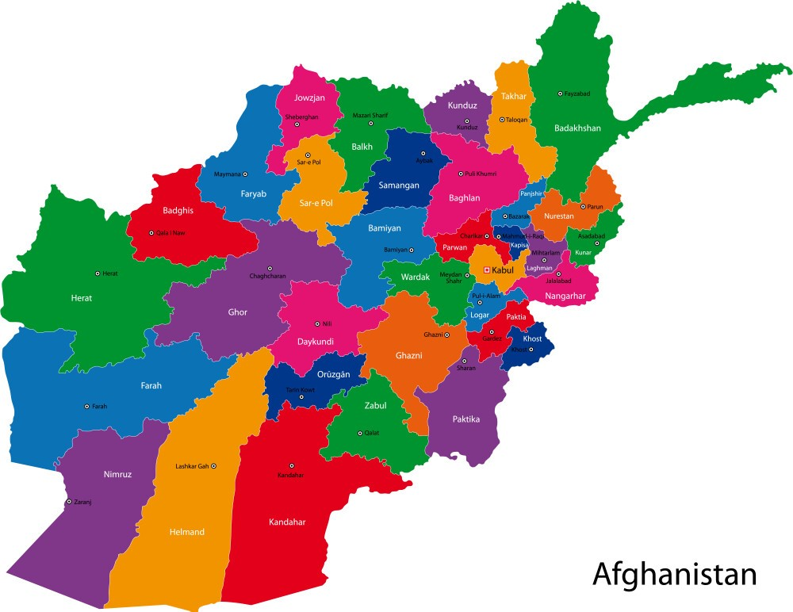

|  |
| تتاریخ افغانستان به حدود ۵۰۰ سال پیش از میلاد مسیح، زمانی که افغانستان تحت شاهنشاهی هخامنشی قرار داشت، اشاره میکند. شواهد نشان میدهد که درجهای پیشرفته از فرهنگ زندگی شهرنشینی حدود ۳۰۰۰ تا ۲۰۰۰ سال پیش از میلاد مسیح هنگام ورود این مهاجرین به فلات ایران در این سرزمین وجود داشت. همچنین در مناطق مندیگک و مسعینک بناهای مربوط به پنج هزار سال پیش از میلاد یافت شدهاستسرزمین افغانستان از لحاظ قدمت تاریخی یکی از کهنترین سرزمینهای جهان بهشمار میرود افغانستان، به عنوان یکی از بخشهای امپراتوری شاهنشاهی هخامنشی و در مسیر جاده ابریشم قرار گرفتن، محل پیوندگاه تمدنهای بزرگ جهان بوده و یکی از مهمترین مراکز بازرگانی عصر باستان بهشمار میرفتهاست. این موقعیت مهم و حساس ژئواستراتژیکی و ژئوپولیتیکی افغانستان در شکلدادن موزائیکی غنی از فرهنگها و تمدنهای بزرگ همچون ایرانی، یونانی، بینالنهرینی و هندی در این کشور نقش مهمی داشتهاست. از عصر پارینهسنگی و طی دورههای تاریخی، مردم افغانستان جایگاه عمدهای در معرفی و گسترش ادیان جهانی و نقش مهمی در بازرگانی و دادوستد داشته و گهگاه کانون مسلط سیاسی و فرهنگی در آسیا بودهاند. از این رو افغانستان در طول تاریخ گلوگاه یورش مهاجمان و جهانگشایانی بوده که ردپای آنها هنوز در گوشه و کنار این سرزمین دیدهمیشود تنها یک عسکر انگلیس از کابل به طرف ننگرهار به شکل زخمی خود ره رساند همانطور که از میانرودان (بینالنهرین؛ عراق امروزی) به سبب تمدنهای کهن و باستانیاش بهعنوان «گهوارهٔ تمدن»، و از مصر باستان به سبب اهرام باستانیاش بهعنوان «عجایب دنیای باستان» خواندهمیشود، از افغانستان نیز به سبب موقعیت مهم و حساس ژئواستراتژیکی و ژئوپولیتیکیاش و حضور موزائیکی غنی از فرهنگها و تمدنهای بزرگ در تاریخ هزاران سالهٔ این سرزمین بهعنوان «چهارراهِ فرهنگهای باستان» یاد میشود . |
Afghanistan Provinces
|